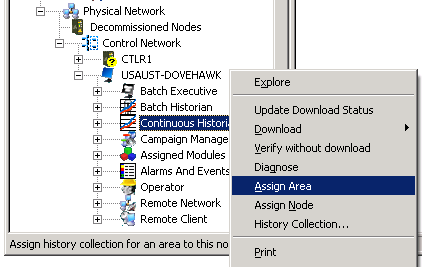

Assigning an area to a Continuous Historian subsystem
allows the subsystem to collect historical data from the modules in that area.
Assigning an area to the Alarms and Events subsystem allows the subsystem to
collect alarms and events. Perform the following steps to assign TANK-101 to
both subsystems:
-
Open or restore DeltaV Explorer.
-
Navigate to the workstation where the events and process data for
the area will be stored.
-
Double-click the workstation to expand its contents.
A number of icons, including an
Operator icon, an
Alarms and Events icon, a
Continuous Historian icon, and a
Batch Historian icon, are listed under the
workstation.
-
Select
Continuous Historian.
-
Right-click, select
Assign Area, and then browse for TANK-101.

-
Click
OK in the
Browse dialog.
-
Select
Alarms and Events.
-
Right-click, select
Assign Area, and then browse for TANK-101.
-
Click
OK in the
Browse dialog.
A confirmation dialog instructs you to download the workstation's
setup data and then log off and back on to add the area to the Alarm Banner.
Click
Yes in this dialog.
TANK-101 appears in the
Contents View for the Continuous Historian
and Alarms and Events subsystems. The Continuous Historian subsystem will
collect historical data from the modules in plant area TANK-101, and the Alarms
and Events subsystem will collect alarms and events in plant area TANK-101.
The next step is to enable history collection on the workstation.